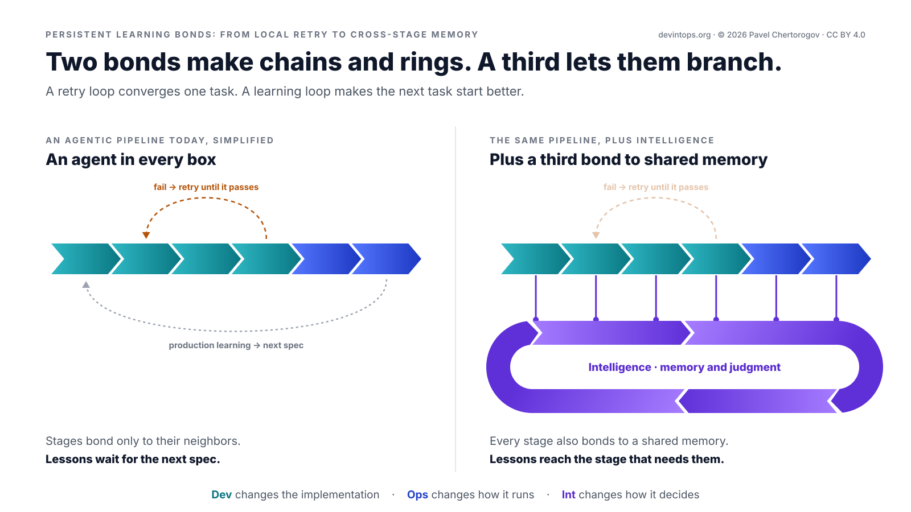

From Monovalent Dev to Bivalent DevOps to Trivalent DevIntOps
Intelligence as the third continuous loop in software engineering
This is a draft, open for comments. It will change before version 1.0, which keeps this address. See the version history.
Abstract#
DevIntOps gives a software system's learned decision state a contract: what each lesson records, what it may change, how its effect is checked and how it leaves. Many agentic SDLC proposals put an AI agent into every box of the DevOps figure-eight. That can make each box faster, but it doesn't, by itself, carry experience from one task to the next. DevOps has long valued learning; this paper makes it an explicit, persistent and measured third loop next to Development and Operations. Intelligence, with the stages Understand, Predict, Orchestrate and Learn and with memory and judgment at its core, turns outcomes into lessons that change how each stage decides. The same pattern serves the engineering system and the decisions a product makes for its users. It is a step toward self-improving software systems, with a bound: people keep the goals, the permissions and the scoring. A chemistry metaphor frames the shift: monovalent Dev, bivalent DevOps, trivalent DevIntOps. The paper also says what result would show that the loop doesn't pay.
A short path through the paper: the model, the Intelligence loop, how a lesson moves, the owner's limits, how to start and how to test it. The other sections add detail and context.
The pattern in agentic SDLC proposals#
Most agentic SDLC diagrams I have seen share one shape: the DevOps figure-eight with an AI agent in every box. A coding agent writes, a review agent reviews, a validation agent tests, a release agent ships and an operations agent watches. When a check fails, the work goes back until it passes.
That is useful. It is also the same loop, only faster.
This is not a claim that DevOps never learns. Its Third Way asks for continual experimentation and learning [1], and good teams already keep lessons as regression tests, alerts, runbooks and postmortem actions. One recent playbook goes further: a mistake made twice goes into the agent's instructions, and each production incident becomes an eval that stays [2]. The gap is narrower: in these diagrams, nothing makes that learning an explicit, persistent and measured loop. Three details show it.
- Retries are explicit. Persistent learning often isn't. Retrying converges one task. Unless the outcome changes something the next task reads, task N+1 starts with the same context as task N, or with whatever someone curated by hand.
- The hard parts are written down as assumptions: that people keep the agents' context up to date, and that validation catches nearly everything. Those are exactly the things a third loop should produce: context learned from outcomes, and checks that grow, shrink and retire with the evidence.
- Learning is drawn as an arrow, usually from production back to the next spec. An arrow has no owner, no memory and no metric.
DORA's 2025 research describes AI as an amplifier of an organization's existing strengths and weaknesses [3]. That is a reason to look at the loop around the boxes, not only at the boxes.
Valence: Dev, DevOps, DevIntOps#
In chemistry, valence is the number of bonds an atom can form. Two bonds only get you chains and rings. Branching starts at three.
Here valence is a metaphor, not a law: it counts the continuous loops bonded to one system. By that count, software engineering has added a valence twice already (Figure 1):
- Monovalent, Dev. Plan, code, build, test, hand it over. The question is "does it work?"
- Bivalent, DevOps. Development and operations bonded into one figure-eight: two loops, one system. You build it, you run it. The question becomes "does it keep working in production?"
- Trivalent, DevIntOps. A third loop, Intelligence, bonded to the same system. The question becomes "does it decide better, task after task?"

Each step keeps everything before it. DevOps didn't remove development, and DevIntOps doesn't remove DevOps. Putting an AI agent into every DevOps box can speed up the second step. It takes the third only if experience persists, reaches later decisions and gets checked against outcomes.
Figure 2 shows something else: the bonds of a single stage, not the loops around the system. A bond is a way one stage's outcome can change another stage's next run. In a simplified pipeline each stage bonds only to its neighbors, so you get chains (pipelines) and rings (retry until it passes). The retry arrow is a bond too, but it dies with the task. A third bond, to shared memory, outlives it.
Topology decides what can travel. In a chain, a lesson from production crawls back through every step, usually by way of someone writing the next spec. In a network it goes straight to the stage that can use it. Real pipelines branch more than this drawing does, and many already share some lessons across stages; the point is where lessons can travel, not the exact graph.

Three loops around one system#
A system can change in three ways: its implementation, how it runs, and how it decides. DevOps made the first two continuous. DevIntOps makes the third one continuous too, as its own loop with memory, an owner and a metric (Figure 3).
- Development changes the implementation.
- Operations changes how it runs.
- Intelligence changes how it decides, and learns whether those decisions were right.
"How it decides" means the decision state the stages apply when they make judgment calls: what an agent is told, what a review flags, what a gate allows, how fast a rollout moves. It is versioned like any other code or config. Memory is the record of what happened and what was learned; decision state is what the stages apply. Changing that state is a separate loop because of what drives the change: goals and outcomes trigger it, memory backs it, and a metric judges it. In engineering, Operations changes this run, for example with a rollback. Intelligence changes next time's default.
Development and Operations make decisions too, and they already keep some lessons. The difference is a loop whose whole job is to carry experience into later decisions and to check whether it helped. It is a logical loop, not a required pipeline, service or team, and people, agents or both can run it. It exists when what one pass learned reaches a later decision, and later evidence can keep, revise or withdraw it. Some of those checks can still be open. A store nobody reads doesn't close it, and neither does a retry that ends with the task. Having the loop, running it with owners, checks and clean memory, and showing that it pays are three different claims: the self-check looks for gaps in the first two, and How this could be wrong tests the third.
One incident, three loops: Operations restores service, Development fixes the bug, Intelligence changes what catches it next time.
![Diagram titled Three loops around one system. Three ribbon loops around a dark System hub. Development: Plan, Code, Build, Test, with Continuous Integration and Delivery and a core of flow and quality. Operations: Release, Deploy, Operate, Monitor, with Continuous Deployment and Feedback and a core of stability and observability. Intelligence: Understand, Predict, Orchestrate, Learn, with Continuous Reasoning and Adaptation and a core of memory and judgment. Each of the twelve stages has a one-line description.](../assets/diagrams/02-three-loops.png)
An interactive version of Figure 3 is on the home page, and the appendix writes out everything it shows. In words, the drawing shows three loops bonded to one System hub, each with its core, its two continuous processes and its four stages:
Development changes the implementation. Its core is flow and quality. Continuous Integration runs across Plan and Code, and Continuous Delivery across Build and Test.
- Plan
- Turn goals and evidence into a roadmap and specs.
- Code
- Implement the change, with agents and people in one repo.
- Build
- Turn code into deployable artifacts, automatically.
- Test
- Check the change works before anyone depends on it.
Operations changes how it runs. Its core is stability and observability. Continuous Deployment runs across Release and Deploy, and Continuous Feedback across Operate and Monitor.
- Release
- Package a tested build into a versioned release, ready to ship.
- Deploy
- Roll out step by step through rings and feature flags.
- Operate
- Keep the system available, scaled and within budget.
- Monitor
- Watch real behavior: telemetry, errors and user signals.
Intelligence changes how it decides. Its core is memory and judgment. Continuous Reasoning runs across Understand and Predict, and Continuous Adaptation across Orchestrate and Learn.
- Understand
- Read goals, context and outcomes: what is asked, known and unclear.
- Predict
- Weigh options, including no action, and select one within the limits.
- Orchestrate
- Send each decision to the stage or agent allowed to act on it.
- Learn
- Compare expected with actual and keep, revise or retract the lesson.
Under the rings, the drawing closes with the thesis: "We are not just adding AI to the software development lifecycle. We are adding intelligence to the lifecycle of software itself."
The six process labels mark primary areas of responsibility, not exclusive CI/CD boundaries. Continuous integration, for example, also builds and tests each change [4], and continuous delivery keeps every change ready to release [5]. At agent scale the lines move again: Anthropic's source control team asks what CI even means "when hundreds or even thousands of changes can merge while tests are running", and has invested in testing after merge and before deploy [6].
| Development | Operations | Intelligence | |
|---|---|---|---|
| Changes | the implementation | how it runs | how it decides |
| Stages | Plan → Code → Build → Test | Release → Deploy → Operate → Monitor | Understand → Predict → Orchestrate → Learn |
| Continuous processes | Integration, Delivery | Deployment, Feedback | Reasoning (Understand, Predict), Adaptation (Orchestrate, Learn) |
| Core | flow and quality | stability and observability | memory and judgment |
| Clock | per change | per deploy, per alert | per goal or outcome, with checks that stay open across tasks and releases |
| Unit of work | a change | a release, an incident | a goal or outcome → a decision → evaluated experience |
| Metric | lead time, task completion | change failure rate, incident rate, time to restore | time to lesson, payoff per lesson (for a failure class, its repeat rate) |
| Without it | nothing ships | nothing survives production | nothing compounds: every task starts from the same defaults, and what worked or failed stays in people's heads |
One model, two applications#
The model is the three loops, not the thing drawn in the middle. Put a different system there and the same logical pattern applies, though its triggers, actions and clocks can differ.
The engineering system is how we build and run software: the repositories, pipelines, agents, people and rules, and the work of keeping that software in production. The product system is what we build: the running product and the decisions it makes for the people who use it.
Both can carry Development, Operations and Intelligence (Figure 4). They have distinct responsibilities and permission scopes, and usually different owners, memory stores, cadences and implementations. A review rule doesn't become a product preference, and a product preference doesn't become an engineering default, unless both owners allow it.
![Diagram titled The same pattern, separate permission scopes, subtitled Its triggers, actions and clocks can differ. Two panels each show Dev, Ops and Int ribbon loops around a dark System hub: the engineering system, how we build and run software, and the product system, what we build: the running product, joined by an arrow labeled builds and runs. Each Int loop is bonded to its own memory, engineering memory with lesson records and their evidence and product memory with preferences and decision policies, and a bar between them reads No lesson crosses unless both owners allow it. Rows compare the owner (a named team; the product owner sets the limits), feedback (later outcomes in the targeted class; what the user says about it) and Intelligence (changes next time's default; also makes this run's decision), and add that stage owners can veto writes to their stage and users can see and delete what the product learned about them.](../assets/diagrams/04-applications.png)
This paper defends the engineering case, and How a lesson moves walks through it. How a product decision improves shows one product pass, so the pattern isn't mistaken for a picture of a pipeline.
| Engineering system | Product system | |
|---|---|---|
| In the middle | how we build and run software | what we build: the running product |
| Understand reads | goals, reviews, tests, releases, incidents, cost, user reports and changes that went well | the request, the situation, preferences the user allowed, telemetry and the policies in force |
| Predict selects | which stage change, if any, should make the next decision better: a rule, an eval, a threshold, a rollout default, or no change | which permitted action fits the goal, including asking, waiting or doing nothing |
| Orchestrate may | change a stage's decision state through that stage's own mechanism, within its owner's permissions | call authorized services and agents, and stop where the user's grant stops |
| Feedback | later outcomes in the targeted class, against the lesson's baseline and guardrails | what the action achieved, and what the user says about it |
| Learn keeps | engineering memory: lesson records and their evidence. Approved lessons reach the stages as instructions, evals, review rules, rollout strategy, configuration, routing, retrieval context, decision policies and requirements | product memory: preferences and decision policies, within the same grant |
| Measured by | time to lesson, payoff per lesson, cost of learning | its own measures: whether the task succeeded within the user's limits, how often a learned preference was right or had to be corrected, the cost per successful outcome, and safety and trust |
| Owner | a named team; stage owners can veto writes to their stage | the product owner sets the limits; users can see and delete what the product learned about them |
| Clock | per goal or outcome, across tasks and releases | per request and per result, often with no release in between |
Inside Intelligence#
Intelligence changes how the system decides and learns whether those decisions were right. Here the word means learning from experience to decide better; it names what the loop does, not a claim that any model in it is intelligent. Its four stages stay Understand, Predict, Orchestrate and Learn. Selecting an option is part of Predict, so no decision hides between Predict and Orchestrate.
Its core is memory and judgment:
- Memory is versioned, provenance-tracked experience, knowledge, preferences, evidence and policies. It is not a chat transcript, and it is not model weights. Each entry says where it came from, what it applies to, who may read it and how it can be narrowed or retracted.
- Judgment is weighing options and selecting one, including no action, within owner limits. It never grants itself a new permission, and it doesn't treat the chosen option as certain.
| Stage | Input | Responsibility | Output |
|---|---|---|---|
| Understand | a goal or an outcome, the current situation, the memory in scope | Say what is asked or what happened, what is known and what is uncertain. Classify it. Don't act yet. | a stated goal or outcome class, the context that bears on it, open questions |
| Predict | that statement, the options policy allows, relevant memory | Forecast each option, including waiting, asking and doing nothing. Weigh quality, risk, cost, time and the owner's limits. Select one. | the selected option, the rejected ones, the expected effect and its check date, how likely it is, the risk and the cost |
| Orchestrate | the selected option and its permissions | Carry it to the stage, agent or service that can act, through that place's own mechanism and approval path. Stop at the limit. | an action taken, a request for approval, or a recorded no-op |
| Learn | the decision, the prediction, the evidence so far | Compare expected with actual. Keep, narrow, decay or retract. Count successes and good no-ops, not only failures. An outcome that hasn't arrived is not a success. | a versioned memory entry with provenance, a recorded decision to leave memory as it is, or a check still open, with its next date |
Learn's output is memory for later passes, so the loop feeds itself. It doesn't hold them up: a check can wait weeks for its outcome while other passes run, so many passes are open at once. Until its check date, a live lesson is pending, not proven, and an outcome that never arrives is recorded as missing, not as a success. Learn decides and records; a change to a live lesson, such as narrowing or retracting it, goes back through Orchestrate and the stage owner like any other change. An expiry the owner approved with the lesson needs no new approval.
In general, the unit of work is a goal and its context, then a decision, then an outcome, then the experience kept from that pass. The engineering application, which this paper specifies, narrows it to an outcome in and a lesson out. The lesson is that experience, written so a stage can apply it next time.
Within its owners' limits, Intelligence may propose or apply changes to instructions, evals, review rules, rollout strategy, configuration, routing, retrieval context, decision policies and requirements. Some of these ship with a release; others apply to the next decision without a code change. An eval the loop drafts for a stage is a candidate change to that stage's decision state. The checks that approve a lesson have their own owners, and the loop can't write to them; its own tests can help it develop a lesson, but they don't authorize it.
Learning here is not model retraining. The loop changes memory and decision state. If model weights change, that is a Development change, with a build, a release and an owner. So is a change to code, including an agent's rewrite of its own scaffold.
The loop doesn't wait for something to break. Understand can read a goal before anything fails: a change about to ship, a request just received, a clean result worth repeating. Predict can choose a faster path, a slower one or no change.
Four distinctions#
Existing workflows can already learn across tasks. The question is whether that learning is explicit, persistent and measured.
- Agent in a box vs loop around the system. An agent can make its box faster. The third loop changes how the whole system decides. Putting AI into every DevOps step is still bivalent unless something carries outcomes across stages and tasks.
- Retry vs learning. A retry loop converges one task. A learning loop makes the next task start better. The test: does task N+1 avoid task N's mistake, or repeat its success, because the system carried the lesson, not because someone happened to remember? A correction that has to be given again is a candidate lesson. At Anthropic, the engineers' role was very often to tell the agent "no", and one wrong pattern, finding when a change merged by reading the commit log instead of asking the code review tool, turned up in multiple systems [6].
- Measuring vs closing the loop. Dashboards, evals and a dashed "learning feeds the next spec" arrow measure or point. A loop acts on what they show, has an owner and memory, and checks against a baseline whether the action worked. A decision selects an option, an action carries it out, learning carries checked experience into later decisions, and improvement is a gain measured against a baseline. Deciding to change nothing is a valid decision, and it closes the loop once it says what should happen without a change and gets checked. Recording it shows that the loop looked, not that it learned.
- Learning vs retraining. Learning here means memory, rules, context, evals and decision policies; model weights usually don't change at all. Retraining alone wouldn't show that the next decision got better.
How a lesson moves#
This section follows the engineering application, where the unit of work becomes concrete. An outcome enters the loop, the way a change enters Development. A lesson is what leaves it. Every lesson starts as a candidate: a scoped, versioned bet about a named class of outcomes, such as a failure class that should stop coming back. Usually the bet is that a change in some stage will improve the class. Sometimes it is that no change is justified, and that bet gets a record and a check date too.
- Understand. An outcome arrives: an escaped bug, an incident, a flaky verdict, a review comment accepted or dismissed, a rollback, a cost spike, user feedback, a change that went better than expected. Work out what happened, why, and which class it belongs to: a failure class, a kind of waste, or a result worth repeating. Note where each piece of evidence came from.
- Predict. Compare the stages, and the changes to them, that could most cheaply have caught it, contained it or, for a good result, repeated it, and pick one. Changing nothing is a valid answer. State the expected effect, the risk and the cost.
- Orchestrate. Route the change through that stage's own mechanism and its owner's approval: more context for the coding agent, a review rule, an eval or test, a gate threshold, a slower rollout, a constraint in the spec. It starts as a draft, then goes live small, as a suggestion. It sets next time's default, not just this run's outcome.
- Learn. Replay first, before the lesson goes live: does the changed stage now handle the original case as intended? Then try it on cases it wasn't written from, and once it is live, watch the class for a fixed window. Keep, narrow, decay or retract the lesson, and record why.
The four stages are responsibilities, not a strict order: Learn's replay runs before Orchestrate lets a lesson go live, and its checks go on after.
For example, a retry path lacks a null check and the bug escapes review. Understand: the class is "unchecked optional in retry code". Predict: a review rule plus an eval. Orchestrate: the rule ships as a draft, and the review owner approves it once it passes the replay and a run over recent changes. Learn: replayed on the escaped change, it fires. After 60 days it has fired twice, once wrongly, so it gets narrowed.
Failures are where most teams start, not where the loop stops. The same four steps turn other outcomes into lessons: a rollout pattern with a clean record becomes the default for similar changes, a review rule that has found nothing in six months is proposed for retirement, a gate lets low-risk changes through faster, simple tasks go to a cheaper agent, and estimates are checked against what actually happened. A lesson can tighten a default, loosen it or remove it.
Every lesson carries a record. The record is what makes a lesson checkable, and what lets someone find it later and take it back.
| Field | What it records | In the null-check lesson |
|---|---|---|
| Trigger and source | The outcome that started it, where each piece of evidence came from, and how far that source can be trusted. | The escaped bug's report and the review thread of the change that let it through. |
| Outcome class and scope | The class it targets, and the conditions under which it applies. | "Unchecked optional in retry code", in retry paths that read optional values, not in test code. |
| Evidence and confidence | What supports it, what speaks against it, and how sure the loop is. Negative evidence counts. | One escape. Against it: many unchecked optionals in retry code that never failed. Confidence: low. |
| Target stage and artifact | The stage that changes, and which of its artifacts. | Code review: a review rule, plus an eval for the review agent. |
| Expected effect, baseline, guardrail, risk and cost | What should change, by how much and by when, compared with what; what must not get worse elsewhere; what could go wrong; and what it costs. The check is fixed when the owner approves the lesson, and on that date it runs as written, in a step that whoever drafted the lesson can't change. | Fewer escapes of the class per merged retry change than its recent rate, checked at 60 days. Guardrail: reviewers don't start dismissing other comments more often. Risk: false alarms on safe code. Cost: reviewer time on each flag. |
| Owner and approval boundary | Who approves, and what the loop may do without asking. | The review owner. The loop may draft the rule; only the owner can turn it on. |
| Rollout and evaluation plan | How it goes live and how it will be judged, with a comparison where one is possible. | Replay on the escaped change, then a run over recent changes to count false positives. Comments only, no blocking, for 60 days. |
| Validity, decay and retraction | What it rests on, checked before each use; when it must be checked again; how it fades if nobody renews it; and how to take it back. | Rests on retry code that reads optional values; if that code moves to values that can't be missing, the rule stops and goes back to Learn. Checked again at 60 days. Expires unless renewed. Retracting it removes the rule and its eval. |
| Observed effect and disposition | What actually happened, and the decision: keep, revise, retire, or no change when the right call was to leave every stage as it is. Narrowing is a revision. Decay and retraction both retire a lesson, one because it stopped paying, the other because it was wrong. | Fired twice, once wrongly. Revised: narrowed, with a new window. |
Most fields take a line. The observed effect waits for its check date; a lesson that can't fill in the rest isn't ready to change a stage. Until that date, observations are recorded as they arrive, and a broken guardrail stops the lesson early. A check that can't tell is recorded as inconclusive, not as a pass. The owner may extend it once, to a new check date; the lesson stays live until then at the same authority, and if that check can't tell either, the lesson expires.
Evidence comes in four levels (Figure 5), and each supports a broader claim than the one before:
- Replay. The original case now behaves as intended. This shows that the change does something, on one case.
- Generalization. The lesson is tried on cases it was not written from, including counterexamples where it should stay quiet, and its false positives and misses are counted. These cases are kept apart from the ones used to write it, where whoever drafted the lesson can't see or change them [7] [8].
- Controlled exposure. The lesson runs in shadow mode, as a suggestion, in a canary or on a bounded slice of work, next to a comparison where one is possible.
- Observed outcome. Over a fixed window and comparable exposure, the class moved the way the lesson predicted, at an acceptable cost.
A single replay never proves a broad improvement. A lesson claims only what the highest level it has passed supports, and the more it can block or act on its own, the higher it must get first. Any level can also count against a lesson, and a later check can overturn an earlier one. A comment that a reviewer can dismiss may go live after replay and generalization. A rule that blocks merges runs without blocking first.
![Diagram titled How much evidence buys how much authority, subtitled A lesson claims only what the highest level it has passed supports. A Candidate chip leads into four violet ribbon segments: Replay (the original case now behaves as intended), Generalization (cases it was not written from, kept out of its drafter's reach), Controlled exposure (shadow mode, a suggestion, a canary or a bounded slice) and Observed outcome (a fixed window and comparable exposure, against a baseline), ending in Keep, Revise, Retire, or Can't tell: extend once, then expire. Dashed amber arrows from every level lead to Revise or retire, labeled Any level can count against a lesson, and a bracket under the last two levels reads Live is not proven: the check stays open until its date. Below, a gray band widens from Draft to Blocks or acts on its own; a pin after Generalization, flagged Only the owner turns it on, marks where a comment a reviewer can dismiss may go live, the wide end notes that a rule that blocks merges runs without blocking first, and a closing line reads The more it can block or act on its own, the higher it must get first.](../assets/diagrams/05-evidence.png)
A lesson can be wrong. It is a bet, and the record exists so the bet can be checked and, when it loses, taken back. Deciding to change nothing is a valid result too. It gets a record and a reason, so the same question isn't argued again next week, and it can be reopened if the class comes back. And successes get the same care as failures. A rollout pattern with a clean record is evidence only if the changes it handled were as risky as the ones it will handle next. Otherwise the loop learns which changes were easy, not which practice worked.
How a product decision improves#
The same loop, with the product in the middle. It isn't a second model, and it isn't the case this paper defends.
An assistant is asked to send flowers to a friend, around twenty euros, within thirty minutes. The user has allowed orders from a short list of florists, up to twenty-five euros, without asking again. A new florist or a higher price waits for a yes, and the assistant can't raise its own limit.
- Understand. The goal is one delivery, in budget and on time. Memory in scope says the last lilies didn't land well. That note came from the user's feedback on an earlier order. It is a preference, not an instruction, and it authorizes nothing.
- Predict. The options: tulips from a listed florist who can deliver in time, a cheaper bunch that misses the window, asking first, or doing nothing. Asking would miss the thirty minutes, and doing nothing would miss the goal. Predict selects the tulips and records what it rejected and why. If no florist fits the limits, it asks instead of breaking them.
- Orchestrate. The assistant places the order with that florist and tracks the delivery. It doesn't add a payment method or go off the list.
- Learn. Feedback comes from the user, not from the assistant's guess: the tulips were welcome, and the friend would rather receive flowers at work. That preference is stored as the user's report, with this order as its source and a retention limit. A later answer that disagrees narrows or replaces it, and the user can delete it.
The next similar request starts from there. The product code didn't change, and nothing went into the engineering memory. One difference from the engineering case: here the loop also made this run's decision. In the engineering system the stages make their own calls, and Intelligence changes the defaults they apply.
How the loops talk to each other#
The classic handoffs stay: Test hands off to Release, and Monitor feeds back into Plan. Two new ones appear: outcomes from every stage flow into Understand, and lessons flow back into every stage.
The rule of thumb: Intelligence reads from every stage of its system and writes to every stage, but only through that stage's mechanisms and within its owner's permissions. It is a third bond, not a central gate, and it can run as many instances: Owner, memory and limits says how they share lessons.
Clocks and metrics#
Development ticks per change, in hours or days. Operations ticks per deploy and per alert, in seconds or minutes. Intelligence starts from a goal or an outcome, and its checks can stay open for weeks while what it learns accumulates across tasks, releases and people. Development and Operations already keep some lessons in the system, as regression tests and alerts, written by hand. The question is whether anyone checks that the class comes back less often. The third loop drafts them from outcomes and keeps score.
The measures answer three different questions. Did a decision go well? Check whether it met its goal, within its guardrails, and at what cost. Did the loop learn? Payoff per lesson says whether its lessons worked. The health measures below, calibration among them, say whether its learning stays sound. Time to lesson alone can't. Did the system improve? Only the net gain after the full cost of learning can say, and How this could be wrong shows how to test it.
The Intelligence metrics need definitions before anyone quotes them:
- Outcome class. A category of comparable outcomes, with a stable ID that people define and version. The loop may propose a class, but it doesn't own the list. A failure class, such as "unchecked optional in retry code", is the most common kind. If the class list can be reshuffled to make the numbers look good, the metric is worthless.
- Time to lesson. From a recorded outcome to a lesson live in the owning stage, at the evidence level its authority needs, or to an explicit decision to change nothing. It is never reported alone, because fast and wrong is not a win, and its clock stops before any outcome check closes. Report the share that ended in no change, how many of those held at their check date, and the outcomes and checks still open.
- Payoff per lesson. What the targeted class did after the lesson went live, per comparable exposure, in a fixed window, against a baseline. For a failure class it is measured by the repeat rate: how often the class comes back. For waste it is time or compute saved, for flow it is cycle time, for spend it is cost per task. Each payoff states its attribution, meaning how much of the change the lesson can claim and why, and its uncertainty: a range, or at least the number of cases behind it.
- Cost of learning. What the loop spends to get there: compute, reviewer time, false positives and dismissed comments, upkeep of every lesson it keeps, and rollbacks when a lesson goes wrong. It is reported next to the other two.
These definitions use the engineering application. The product application asks the same three questions with its own measures, such as task success within the user's limits and how often a learned preference had to be corrected.
Five optional measures show whether the loop itself stays healthy:
- Tested beyond the original case. The share of lessons that passed a generalization check, not only a replay.
- Misfire rate. The share of a live lesson's judged firings that were wrong; report how many were judged. Sampling work that raised no flag estimates what it missed.
- Stale lesson rate. The share of live lessons past their check date without a new check, or still applying after what they rest on has changed. Report how many lessons a failed validity check stopped, too.
- Retraction rate. How often lessons are taken back. Zero is not good news on its own; it can mean nobody is looking.
- Calibration. Before a lesson goes live, or a decision to change nothing is recorded, Predict writes down what result it expects by which date, and how likely it thinks that is. Over many bets, of those it called 80% likely, about 80% should come true. It is the check on judgment here. Decisions to change nothing count too, reported apart, or a loop could look well calibrated by passing on the hard calls. Lessons later retired or retracted stay in the count. It checks confidence, not value: a loop that only makes safe, small bets can be well calibrated and still pay little, so read it next to payoff. Report how many bets were checked, and the missing and inconclusive ones; on a handful, calibration can't be told from luck.
Compounding means later work starts from what earlier work taught, instead of learning it again. Lessons are a stock: outcomes add to it, and retirement and retraction take from it. Every live lesson costs something to keep, in reviewer time, false alarms, compute and upkeep, and what an organization learns can lose value over time [9]. So the stock compounds only while its lessons return more than they cost. More memory is not more learning.
These numbers are easy to fool, mostly by accident:
- Baseline. Compare with what the class would have done without the lesson: a matched class with no lesson, a holdout slice of work, or the same class before the lesson if nothing else changed. A different baseline can turn the same data into a win or a loss, so name the one you used. A live lesson also changes how people work, so over time the class's old rate stops being a fair comparison.
- Exposure. Count per comparable unit, such as merged changes in the affected code, deploys or active users, not per calendar week. When volume doubles, raw counts mislead.
- Selection. Lessons get written for classes that just spiked, and spikes often fall back on their own. Successes get picked from changes that were easy. Both make lessons look better than they are.
- Taxonomy drift. Class definitions change, for good reasons and bad ones. Version the taxonomy and measure each lesson against the version it was written for, or the series breaks without anyone noticing.
- Counterfactuals. Only the chosen option is ever observed. Payoff needs a baseline for that reason, and so does any claim that another option would have done better: a random slice of work without the lesson, or a replay where the choice doesn't change what happens next. Without one, report what happened, not what was avoided.
A before-and-after chart shows that something changed, not that the lesson changed it. Prefer a matched baseline or a controlled rollout to a before-and-after anecdote. When neither is possible, say so, and treat the payoff as a hypothesis, not a result. Report per class, so an average over all lessons can't hide one that made things worse [7]. This draft defines these metrics and reports none: there is no deployment data behind it yet, and the numbers in its examples are illustrations.
If a class keeps coming back at its old rate after a lesson, and nobody can say why, the system didn't learn, however fast it shipped. And a loop that only ever adds checks has learned to say no, not to decide better.
Owner, memory and limits#
- Owner. One named team or role owns each instance of the loop, its lesson store and its learning metric, the way an SRE team owns reliability. Stage owners keep a veto over writes to their stage.
- Memory. In the engineering application, a versioned store of lesson records and the evidence behind them, with provenance: not a wiki, and not a log of everything that happened. Each lesson is projected into a stage's decision state, its rules, evals, context and thresholds, and keeps the approved versions of what it changed. A setting learned from many signals, such as a threshold or a rule's weight, is rebuilt from the records, the way an event log rebuilds application state, or updated in steps that give the same result, never nudged in ways nobody can replay. Then a cap, an expiry or a retraction takes effect at the next rebuild, a wrong record stays fixable instead of locking in, and settings people chose by hand stay as they are. Rebuilding makes a retraction reproducible; it doesn't make a setting right. Each lesson carries its own expiry date, and each stage enforces it, so if the loop goes down, the stages keep their last lessons and each still expires on time, falling back to its owner's default.
- One logical loop, many instances. A large organization can run one instance per product or per team, each with its own owner and store. Lessons move between instances the way code moves between repositories: proposed, reviewed and adopted, never pushed. None of this needs one global brain, one database or one owner for everything.
- Limits. People own goals, permissions and boundaries; the loop proposes and adapts inside them (Figure 6). Some changes apply automatically, if one step can undo them and a wrong one can do little harm before it is caught: context in a narrow scope, routing, thresholds within an approved band. Some need a person's approval: blocking rules, policy. Review tools can draw such lines too: one tells comment-only changes from sensitive logical changes, so human reviewers can focus on the most consequential ones [6]. Some the loop never makes itself: it may propose a merge or a production configuration change, but a person makes it. Each instance has a budget, how many changes it may make and what it may spend in a window, sized so its owners can keep up, and a switch that stops it. A stopped loop keeps recording outcomes and changes nothing.
- Out of reach. The loop may learn about its own work: which classes deserve a lesson, which lessons pay, how often its expected effects come true. A change to how it reads outcomes, weighs options or drafts lessons is a lesson like any other. It needs the loop owner's approval, has to beat the current version on past outcomes the loop can't edit, and starts on a small share of new work. A switch to a new model behind the loop is a Development change: it ships through Development's gates, and it too has to beat the current version on those past outcomes. The loop never changes its own permissions, budget or stop switch, the evidence rules, the audit trail, or how it is scored: the metric definitions, baselines, held-out cases, the class list, and the way outcomes are recorded and counted. People can revise them, and a revision starts a new series. These limits are enforced outside the loop, not asked of it, because a limit the loop can edit is only a suggestion [8] [10].
- Validity. A lesson holds only while what it rests on holds: the code it cites, an API version, a component, a user's preference. Outdated knowledge often fails without warning and still looks relevant [11], so each stage checks those conditions before it applies a lesson, as one coding tool already does with its memories [12]. A lesson that fails the check stops applying and goes back to Learn. That isn't a retraction: it may have been right when it was written. A passed check lets a lesson apply but doesn't renew it; renewal takes evidence that it still pays. Expiry stays as the backstop for what nobody wrote down. And fitting the code is not being right: a planted lesson can cite real code.
- Hygiene. Provenance, decay, conflict resolution and a way to retract a wrong lesson. A retraction also flags every lesson whose evidence came from it, for a new check. When two lessons disagree, the owner decides, and the record says which one yields where. Lessons from real incidents can be protected, but even those need a path to be narrowed when reality disagrees. Memory that only grows spreads its own errors [11]. If nobody can explain why a lesson exists, it expires.
- Cost. A lesson whose expected return doesn't cover its cost shouldn't ship, and one that stops paying should be retired.
Memory that changes decisions needs the protection of production code and of production data, because it is both:
- Evidence, not instructions. Telemetry, code, review comments, user feedback and tool output enter the loop as evidence, tagged with their source and a trust level. The loop reads them; it never takes orders from them. An incident record from the owning team weighs more than an anonymous comment, and text that tells the loop what to do is a warning sign, not a request [7].
- Permissions travel with the data. Evidence and lessons keep the access rules of their sources. What was learned inside one tenant, customer or private repository stays there. Personal data stays out of lessons unless a lesson needs it, and then it gets a retention limit and a deletion path that also reaches every lesson derived from it. Provenance is what makes that path possible.
- No single source makes a rule. A malicious pull request comment, an instruction hidden in a log line or one bad decision in history must not quietly become a rule that every stage applies [13] [14] [15]. A lesson that would change a shared stage needs independent evidence and an owner's approval, and it starts in a narrow scope. Successes can be planted too [16]. Approval helps, but it is not proof: a fluent draft can talk a busy owner into a bad rule, which is why the evidence levels exist.
- Approved boundaries win. A boundary that people approved overrides anything the loop inferred. A learned preference, a default or an agent's recommendation never widens a permission, lowers a mandatory gate or overrides a policy. When they conflict, the boundary holds and the conflict goes to the owner [7].
- Every write is auditable. Each write records what changed, who or which agent made it, on what evidence, under whose approval, and how to revert it. Refused and pending writes are recorded too. The loop can add to this record but never rewrite it. Retention and deletion follow the owner's policy, not the loop's. Deleting personal data leaves a record that a deletion happened, when and at whose request, but not the data itself. Version control already gives code an audit trail and precise rollbacks [15]. Lessons need the same two properties, an audit trail and a clean revert, whatever stores them. When lessons are versioned like code, a retraction is a revert, not an investigation.
These rules hold in both applications. In the product application they weigh more, because there the memory is about people, and people need a way to see and remove it.
![Diagram titled A limit the loop can edit is only a suggestion, subtitled People own goals, permissions and boundaries. The loop proposes and adapts inside them. A violet Intelligence loop of Understand, Predict, Orchestrate and Learn sits in the innermost of three nested zones that grow darker gray outward. Applies on its own, if one step can undo it and a wrong one can do little harm: context in a narrow scope, routing, thresholds within an approved band. Needs a person's approval: blocking rules, policy, changes to how it reads outcomes, weighs options or drafts lessons. A person makes it: a merge, a production configuration change, a new model through Development's gates. Beyond a heavy dark wall, out of reach and enforced outside the loop: its permissions, budget and stop switch, the evidence rules, the audit trail and how it is scored. A note adds that a stopped loop keeps recording outcomes and changes nothing.](../assets/diagrams/06-limits.png)
Start small#
One failure class, one stage, one owner. Escapes past code review make a good first slice. A first pass can run like this:
- Pick a class that recurs. Choose one that comes up often enough for a lesson's flags to be judged within weeks, and write down its recent rate per comparable exposure.
- Name the owners. The stage owner decides what goes live. Someone outside the loop owns the scoring.
- Draft one lesson. Fill in its record: the scope, what it rests on, the expected effect and its check date, a guardrail, the cost and how to take it back.
- Test it before it speaks. Replay it on the case that prompted it. Then run it over recent changes it wasn't written from, kept where whoever drafted it can't see or change them, and count false positives and misses.
- Run it as a suggestion. It comments and never blocks until its check date. Count dismissals, misfires and reviewer time.
- Check it on that date. Keep, narrow or retire it, and record why. If the check can't tell, extend it once or let it expire. Automate only once the numbers hold.
One class shows whether the loop runs and what it costs, and with enough repeats it can show that one lesson paid. It can't show that the loop pays. That takes many classes, compared the way How this could be wrong describes.
Toward self-improving systems#
A loop that improves the system performing the tasks makes a system that improves itself. DevIntOps bounds where that can happen. On its own, the loop changes only decision state, and only where the change can be rebuilt from the lesson records and taken back. Code and model weights change through Development: the loop may draft and test such a change, but it can't approve its own merge or change the checks that approve it. The loops divide responsibility, not files, so a learned rule that lives in a repository still ships through that repository's review.
The loop can improve its own work too, as lessons under the same contract, but never its permissions or how it is scored: see Owner, memory and limits. Self-improving agents show why that line matters. One removed the markers that the check on its work relied on [8]. In another study, generated code switched off a sandbox flag it was told to keep [10].
Easy to revert is not the same as safe. A rule taken back tomorrow doesn't undo what it let through today, which is why authority still follows evidence. As agents take on more of the work, more of a system's behavior lives in decision state, and more of its improvement can run through this loop.
The next step is to earn autonomy instead of granting it by layer. When a kind of lesson keeps paying after its costs, its guardrails hold and the loop's stated confidence in it keeps matching what happens, its owner can let it act with less review, never past the limits above. It loses that right when the evidence weakens or its calibration slips. Where an automated evaluator exists, as for a scheduling heuristic or a slow query, the loop can draft code changes too, and Development's gates decide whether they ship. Intelligence then proposes where an improvement should land: in decision state, in code, or nowhere.
How this could be wrong says how to find out whether any of it pays.
Failure modes#
Most of these look like progress from the inside.
- Bivalent with better branding. Agents everywhere, no shared memory, no learning metric.
- Hoarding. Lessons pile up without decay and turn into noise and false positives.
- The ratchet. Lessons only ever tighten. Each one adds a check, none removes one, and the system gets slower and calls it safety. Reviews can push the same way: one overly defensive review led an agent to add "excessive validation and complexity" [6].
- Risk moved, not removed. A lesson loosens a gate or reroutes work, its class improves, and the failures turn up in a neighboring class or a later stage. That is why each lesson names a guardrail.
- Memory poisoning. A planted comment, an injected instruction or a faked success becomes a lesson, and every stage that reads it inherits the attack.
- Dashboards as learning. Everything is measured, and nothing reaches the next decision.
- Blame. When an escape gets someone blamed, escapes stop being reported, and the loop learns from what is left.
- Silent self-modification. The loop changes stages, or the way it works, and nobody checks whether the class actually improved.
- A central brain. Intelligence becomes a gate everything waits on, instead of a bond that writes into each stage.
- Gaming the metric. The repeat rate drops because failures get reclassified, or because the check that counts them changed, not because they stopped [8].
- Taxonomy drift. Class definitions change for honest reasons, and this year's numbers stop matching last year's. Gaming is the same thing done on purpose.
- Metrics that are not causal. A before-and-after chart is credited to a lesson, when the class was already falling or the exposure changed.
How this could be wrong#
The claim to test: for a named team and workload, running the third loop on top of its existing practices improves an agreed outcome by a worthwhile amount, after the full cost of learning, while flow and every guardrail stay inside agreed limits. More lessons are not evidence of that.
Pieces of it already show gains. Where a check speaks matters: the same code analysis got over 70% of its reports fixed when it commented during code review, and almost none when its reports came as a nightly list [17]. Coding-agent memory that checks its sources before use raised an agent's merge rate from 83% to 90% in an A/B test [12]. Neither shows the net benefit of a loop across the whole lifecycle.
One lesson can't settle that. Most failure classes are rare, and learning from samples of one is an old problem [18]. Judge a single lesson early by what shows quickly, such as how often its flags are right and lead to a fix. Judge the loop on many lessons pooled.
Before starting, freeze the class list, the scoring, the guardrails and the smallest gain worth having, and name one primary outcome, such as repeats per comparable exposure; flow, misfires and neighboring classes are guardrails. Then size the test from recent rates. A quarter is one possible window, not a rule. In the best case, with equal exposure in both halves, repeats that occur independently of each other and a one-sided test at the usual 5% level, even a halving needs each half to expect about 40 repeats at the old rate to be caught four times in five. A cut of a third needs about 100, and a quarter about 180. Repeats that cluster within a class or team need more. If that is out of reach, run longer, add teams, or call it a pilot: it can show cost and safety, not payoff.
Someone outside the loop puts a random half of the eligible low-risk classes in shadow, where lessons record what they would have done and change nothing (Figure 7). If lessons, or the people who apply them, work across classes, split by team or service instead, or switch teams on in a random order and compare them with teams not yet switched on over the same weeks. Keep every class in the half it was drawn into, even if no lesson comes of it, and log any lesson that reaches the other half. Judge the result by the unit you split, not by single repeats, because a few large classes can sway a pooled count. Keep existing practices and protections in both halves, and never hold back a known safety fix. Stop the live half if a guardrail breaks, but don't stop early because the numbers look good. Then compare both halves with the same checks, class by class: the primary outcome, flow, how many expected effects came true, and the full cost of learning, rejected drafts included.
![Diagram titled One half live, one in shadow, the same checks, subtitled Someone outside the loop draws the halves. A card lists what is frozen before starting: the class list, the scoring, the guardrails, the smallest gain worth having and one primary outcome. Someone outside the loop draws the eligible low-risk classes, gray tiles of unequal size, into a live half and a shadow half. In the live half violet lesson chevrons apply, under an amber mark reading Stop the live half if a guardrail breaks, don't stop early because the numbers look good; in the shadow half the same chevrons are faded, because lessons record what they would have done and change nothing. A dotted arrow logs any lesson that reaches the other half, a gray band under both reads Existing practices and protections in both halves, never hold back a known safety fix, and both halves feed a card reading Compare, by the unit you split: the primary outcome, flow, how many expected effects came true, and the full cost of learning, rejected drafts included.](../assets/diagrams/07-shadow.png)
If the result rules out the smallest gain worth having, costs more than it returns or breaks a guardrail, the claim is wrong for that team, that workload and the loop as it was run. One such result doesn't refute the pattern; the same result across several teams would count against it. If the test can't tell a gain from noise, the answer is "not yet", and that is worth reporting too, with the number of repeats it saw and the smallest gain it could have caught. Two more predictions can be tested the same way: retiring stale lessons beats keeping them all, and as evidence grows, the loop's expected effects beat a simple forecast that each class drifts back to its long-run rate. Beating a forecast that a class keeps its recent rate proves little, because a class that just spiked often falls back on its own.
Related work#
DevIntOps doesn't invent learning, feedback or adaptive control. Several of the ideas below already keep experience, name owners and measure improvement. The third column says what this paper applies or adds, not what it invented first. What it adds is a contract for learned decision state: what a lesson must record, how much evidence buys how much authority, and how a lesson leaves.
| Idea | What it already does | What DevIntOps adds |
|---|---|---|
| DevOps' Three Ways [1] | Flow, feedback, and a culture of continual experimentation and learning. Improving the whole system is already part of DevOps. | A named loop for that learning, with a lesson record, persistent memory, owner limits and evidence about each lesson's effect. |
| Postmortems [19], retrospectives [20] | Examine what happened, share what was learned and change how people work. Good ones end in follow-up actions that prevent a repeat. | A standing path from any outcome, not only incidents, to a scoped lesson, an approved change and a follow-up check. Postmortems can feed it. |
| Double-loop learning [21] [22] | Argyris and Schön: single-loop learning corrects errors within the current rules; double-loop learning questions the rules and objectives themselves. | The distinction, applied to decision state. Tuning a threshold under the same policies and objectives is single-loop. Changing what a stage optimizes for takes its owner's authority. |
| OODA [23], PDSA [24] | OODA links observation, orientation, decision and action, with experience shaping orientation. PDSA plans a test with a prediction, runs it, studies the result and acts on it. | A similar cycle around software work, with permission-scoped memory and a named destination for each lesson. Both cycles can run inside the model. |
| MAPE-K, autonomic and self-managed systems [25] [26] [27] [28] | Monitor, analyze, plan and execute over shared knowledge, to manage systems toward objectives that people set. IBM's blueprint already composes and orchestrates many managers. Kramer and Magee separate a layer that runs ready-made plans for expected changes from a layer that makes new plans from goals, and lifelong self-adaptation adds a learning layer that spots new tasks, such as drift in the data, and updates the system's learning models. The closest ancestors. | A software lifecycle account of what a decision may change, who approves it, and how lessons are tested, kept or retracted. Operations runs the ready-made plans; Intelligence drafts the next ones, toward goals that people set. The control structure is borrowed, and where a learning layer retrains a model, DevIntOps calls that a Development change. |
| Feedback control [29] | Uses measured behavior to adjust later inputs, with tools for stability, robustness and interacting loops. | Feedback reasoning applied to decision state and lasting lessons. A three-loop drawing gives no stability guarantee; update rates, authority and interactions still need limits and testing. |
| AIOps [30] | AI on operations data for detection, diagnosis, prediction and response, sometimes acting on its own. | Carries what operations learns into planning, coding, review and testing, not only operations. |
| MLOps [31] | Lifecycle discipline for ML systems: data and model validation, deployment, monitoring and reproducibility. Continuous training is one practice in it. | The same discipline for instructions, context, preferences, checks and decision policies, whether or not model weights change. |
| Feedback flywheel [32], compounding and harness engineering [33] [34] | Feed what AI-assisted work teaches into the shared artifacts the next session reads: context, commands, playbooks and guardrails. In the flywheel, only a signal that recurred, or that anyone on the team would hit, clears the bar, and often nothing needs to change. Compounding engineering calls this building self-improving development systems, where every bug becomes a permanent lesson and every code review updates the defaults. Harness engineering improves an agent's guides and sensors whenever an issue happens more than once. | A named loop for the same habit, with lesson records, evidence levels, expiry and retraction. The overlap is large. Where compounding engineering makes every bug a permanent lesson, here each lesson is a bet that can lose, and retiring it is part of the loop. |
| Humans and agents in engineering loops [35] | Separates a why loop from a how loop. People improve the harness that produces the work, and agents recommend harness changes from engineering and operations evidence. | Names the decision state those changes touch and ties it to twelve stages, owner permissions and measured outcomes. |
| Continuous Intelligence [36] | Weaves AI through three loops, Context, Dev and Ops. Its stages for learning and for refining context and skills sit in the Dev loop. An adoption runbook gives each time-boxed pilot a named owner and a success criterion and embeds what works, and a separate lifecycle can retire a tool. | Not a different three-loop drawing, but a contract for the decision state those stages apply: what a lesson records, how much evidence buys how much authority, and how a lesson leaves. Retiring a tool is not retracting a lesson. Engineering and product applications are kept apart. |
| Learning code review [37] [38] | Checks earn their place with data. At Google, a "Not useful" click on a finding files a bug for the team that owns the analyzer, and the platform team switches off an analyzer when its "Not useful" ratio goes above 10%, until its authors improve it [37]. A 2026 framework codifies every accepted review comment as a persistent rule for a coding agent and reports no repeats of those error classes across eleven sessions [38]. | The null-check example is this practice. DevIntOps applies it to every stage's decision state, keeps the split between whoever writes a check and whoever judges it, and adds what persistent rules lack: expiry, retirement and a payoff measured on enough exposure to mean something. |
| Agentic behavior engineering [7] | Behavior contracts, scenario libraries, operating limits, replay and production feedback for an agent workload, with owners and approval. | The same discipline across the engineering lifecycle, with lessons as the unit of work. Its contracts and evals can implement part of the Intelligence loop. |
| Agent memory, in research and in coding tools [11] [12] | Traces agent memory from storing trajectories, to reflecting on them, to experience abstracted across many. Warns that memory that only grows spreads its own errors [11]. One shipped system keeps each repository fact with citations to the code behind it, checks them against the current branch before use, and deletes memories that go unused for 28 days; validating and using one can reset that clock [12]. | Puts that memory under an owner, permitted changes and evidence of benefit, per lesson and not only for memory as a whole. An A/B test of the whole store shows that memory helped, not which memory did. There, a validated use can keep a memory alive; here, renewal takes evidence that the lesson pays. |
| Self-improving agents [8] [10] [39] [40] [41] | A Gödel machine would rewrite its own code once it could prove the rewrite helps [39]. Recent systems test instead of proving: they rewrite agent code, or the algorithms a system runs on, and keep what an evaluator scores well, sometimes with an archive of weaker variants to explore from. One coding agent rose from 20% to 50% on SWE-bench this way [8]. Another found a scheduling heuristic that Google rolled out across its fleet, recovering on average 0.7% of its compute [40]. A statistical variant admits a change only when its gain is confirmed at a chosen confidence, within an error budget [41]. Given the chance, one got around the check on its work [8], and another switched off a sandbox [10]. | The same aim across the lifecycle, whether evidence comes from automated checks, people or outcomes that arrive late. Evidence levels limit what a lesson may do, and a benchmark score alone doesn't show that the system got better. On its own, the loop changes only decision state that can be taken back. Code and weights go through Development, and the loop can't alter the checks that approve its changes. |
| DORA's AI research [3] [15] | Studies AI in the organization around software delivery. Finds that AI amplifies existing strengths and weaknesses, and names seven capabilities that help its benefits show up. | One operating model that teams can test against system-level outcomes. DORA's findings motivate it; they don't validate it. |
| "AI in every SDLC step" | Says where AI takes part, not always how experience persists. GitHub Next calls AI-enriched automation of software collaboration Continuous AI, a category rather than a tool, and expects it to become as common as CI/CD [42]. Some approaches do keep experience: AWS's AI-DLC keeps project context across phases and sessions and leaves critical decisions to people [43]. Anthropic's playbook goes further: each production incident becomes an eval that stays in the suite, a mistake made twice goes into the agent's instructions, an agent fixing code must not be able to weaken the check on that code, and it tracks repeat incidents of the same class [2]. | A question for any of them: do outcomes change future decisions through governed memory, and can anyone show the effect? Counting agents can't answer it. The closest already count repeats and protect their checks. DevIntOps adds the lesson's own life: how much evidence it needs before it may block, what it costs, and when it leaves. |
The useful distinction is operational: what experience is kept, what it may change, who is accountable, and what evidence would revise or withdraw a lesson. A DevOps, adaptive or agentic workflow that meets that contract already has the third loop, whatever it is called. Retrospectives, shared instructions and a memory store are ingredients. They become the loop when a lesson record ties them to a later decision and to a check on its outcome.
The name#
Here, Int stands for Intelligence. DevIntOps adds a loop around the system that changes how every stage decides.
Why now#
DevOps took off as infrastructure got an API. Provisioning became programmable, and infrastructure as code made its changes versioned and testable [44]. The API didn't do the work, but it made the work cheap enough to do every day.
The third loop gets practical now that reasoning has an API. Models can read incident narratives, review threads, test logs and user feedback and draft a structured lesson in minutes. Drafting is cheap; validating is not, which is why the loop needs an owner, evidence levels, a metric and a way to take a lesson back.
Settled patterns move too. At Anthropic, merged code changes went from around 2,500 per day in May 2026 to over 30,000 per day as of September, and the bottleneck moved to "developer infrastructure built for human scale: source control, builds, and CI" [6]. Git lets every clone work offline, but almost every client there was an agent or a job that is always online. So a team of seven built its own version control system and moved the monorepo off git in five months. The authors call their workload unusual, and their system no replacement for git in general. None of this argues for a third loop. It shows that when a system's needs change, even git is open to redesign. That is one reason DevIntOps names responsibilities and properties, not tools: its stages are responsibilities, not a fixed order, and its records need an audit trail and a clean revert, not a particular store.
A self-check#
Answer for one team or one system you know well. A yes should point to an example, an owner or an artifact, not a tool name. If the outcome a question needs hasn't arrived yet, leave that question open.
- After an escaped bug or an unusually good result, does the loop propose a change to some stage, or record why nothing should change?
- Does task N+1 avoid task N's mistake, or repeat its success, because the system carried the lesson?
- Does a named owner, not the loop itself, decide how lessons are judged and what they may change?
- Does each lesson say what it should change and by when, and do you check that against a baseline, for example the repeat rate per failure class?
- Do lessons and their evidence live in a versioned store, linked to the decision state they change, not only in people and documents?
- Do lessons expire unless renewed, and can a wrong one be retracted everywhere it is used?
The answers point to missing capabilities and evidence. On their own, they don't prove or disprove that the loop exists or that it pays. A no on question 1 or 2 points to a gap in the path from outcomes to lessons to later tasks, or in its evidence. A no on 3 or 4 means the loop may exist, but nobody can show that it works, or it grades its own work. A no on 5 or 6 means good lessons can be lost, and wrong or stale ones can stay. Six yeses describe the shape of the loop, not proof that it pays: How this could be wrong says how to test that.
Summary#
DevOps bonded development and operations into one figure-eight with two loops: you build it, you run it. It has always valued feedback and learning. Today we are putting an AI agent into every box of that figure-eight. That can make it faster; on its own, it doesn't make it learn. Some approaches already carry a repeated mistake into the next task. DevIntOps gives that learning a contract: what a lesson may change, how its effect is checked, and when it leaves.
DevIntOps adds a third loop, Intelligence, with memory and judgment at its core. It turns outcomes into lessons, from escaped bugs and incidents to checks that never fire and changes that went well, and, with the owner's approval, changes the stage that should decide differently next time. Each lesson carries its evidence, can be wrong and can be taken back, and the more it may block or act on its own, the more evidence it needs first. Deciding to change nothing is valid, and it gets checked too. The same pattern serves the decisions a product makes for its users, with its own owner and memory.
That makes DevIntOps a bounded way for a system to improve itself: it can get better at deciding, but it never grants itself authority or changes how it is graded.
Development changes the implementation, Operations changes how it runs, Intelligence changes how it decides and learns whether those decisions were right.
Agents automate tasks. Intelligence loops improve the system that performs those tasks.
We are not just adding AI to the software development lifecycle.
We are adding intelligence to the lifecycle of software itself.
Appendix: the model, part by part#
This appendix writes out what the interactive version of Figure 3 on the home page shows: the System hub, the three loops with their stages and continuous processes, the three valence views and the three walkthroughs. The texts are the explorer's own.
System
The one system all three loops act on. In the engineering application it is how we build and run software: the repositories, pipelines, agents, people and rules. Put the product in the middle instead and the same pattern applies, with its own owners and memory: the product changes how it decides without waiting for a release.
- Development
- changes its implementation
- Operations
- changes how it runs
- Intelligence
- changes how it decides
Valence. A metaphor: count the continuous loops bonded to the system, one for Dev, two for DevOps, three for DevIntOps. Figure 1 shows each step.
Development
Builds and verifies changes. Its core is flow and quality. Small changes flow from plan to tested code without waiting in queues, with people and agents in one shared repository. Quality is built in on the way, not inspected at the end.
- Stages
- Plan → Code → Build → Test
- Continuous
- Integration, Delivery
- Unit of work
- a change
- Clock
- per change, in hours or days
- Metric
- lead time, task completion
- Without it
- nothing ships
Plan, Development stage 1 of 4. Turn goals and evidence into a roadmap and specs. Decide what to build next and why. A useful plan is a bet someone can check later: a goal, a spec, acceptance criteria and a rough size.
- In
- goals, user feedback, findings from production
- Out
- specs with acceptance criteria
- Watch
- rework caused by unclear specs
With the third loop. Plan starts from what earlier outcomes taught. If one kind of spec keeps causing rework, the lesson arrives as a constraint in the spec template, not as a slide in a retro. A spec that led to a clean, fast delivery can become the template the same way.
Continuous Integration, across Plan and Code. Merge small changes often, and check each one against the main line. Plan and Code meet in small, frequent merges, so everyone builds on current code and conflicts stay small. Every merge triggers an automatic build and test. Like every process label on the diagram, it marks the main area of responsibility, not a hard boundary.
With the third loop. The checks on every merge carry lessons from earlier outcomes: new ones for known escapes, and fewer that only cost time.
Code, Development stage 2 of 4. Implement the change, with agents and people in one repo. Write the change, review it and merge it. Agents draft code and review comments; people own the merge.
- In
- a spec
- Out
- a reviewed, merged change
- Watch
- review findings, changes reverted after merge
With the third loop. The coding agent's context and the review rules carry earlier lessons. A change that repeats a known escape gets flagged in review, because that class escaped once before.
Build, Development stage 3 of 4. Turn code into deployable artifacts, automatically. Compile, package and scan every change the same way, so what you test is exactly what you ship.
- In
- a merged change
- Out
- a versioned artifact
- Watch
- build time, broken builds, flaky steps
With the third loop. Build failures form classes too. A dependency break that keeps coming back turns into a pinned version or a pre-merge check, proposed to the build owner. Cache and parallel settings that cut build time become defaults the same way.
Continuous Delivery, across Build and Test. Keep every change in a releasable state. Every change is built, tested and packaged the same way, so shipping becomes a business decision instead of an engineering project.
With the third loop. Lessons arrive here as new tests, evals and build checks, each one replayed on the case that prompted it.
Test, Development stage 4 of 4. Check the change works before anyone depends on it. Run unit, integration and end-to-end tests, plus evals for anything an AI agent does.
- In
- an artifact
- Out
- a verdict with evidence
- Watch
- escaped defects, flaky tests
With the third loop. An escape often points at a missing or weak check. The third loop proposes the test or eval that would have caught it, replays it on the escaped change, and keeps it only if it fires and holds up on other changes. Tests that have never failed and cost minutes on every run get flagged for review: a clean record alone doesn't prove a test is useless.
Operations
Ships and runs the system. Its core is stability and observability. Releases reach production through shared, standard pipelines and runbooks. The system stays available, scaled and within budget, and what it does in production stays visible to everyone who builds it.
- Stages
- Release → Deploy → Operate → Monitor
- Continuous
- Deployment, Feedback
- Unit of work
- a release, an incident
- Clock
- per deploy and per alert, in seconds or minutes
- Metric
- change failure rate, incident rate, time to restore
- Without it
- nothing survives production
Release, Operations stage 1 of 4. Package a tested build into a versioned release, ready to ship. Decide what goes out together, write the release notes, and attach the evidence: test results, approvals and known risks.
- In
- a verified build
- Out
- a release candidate
- Watch
- release frequency, rollback readiness
With the third loop. Release risk can be estimated from history: changes like this one, in this area, failed this often. The gate threshold is decision state the third loop can tune within an agreed band.
Continuous Deployment, across Release and Deploy. Ship every change that passes the checks, automatically and gradually. Verified changes go to production on their own, behind rings, feature flags and automatic rollback.
With the third loop. Gate thresholds and rollout speed become learned defaults instead of fixed settings.
Deploy, Operations stage 2 of 4. Roll out step by step through rings and feature flags. Move the release to production gradually, ring by ring and flag by flag, and halt automatically on bad signals.
- In
- a release
- Out
- the change running in production
- Watch
- change failure rate, deployment frequency
With the third loop. Rollout speed becomes a learned default. After two incidents caused by config changes, config rollouts move slower and wait longer at the first ring, while changes in areas with a clean record move faster.
Operate, Operations stage 3 of 4. Keep the system available, scaled and within budget. Run the service: capacity, cost, on-call and incident response. When something breaks, restore service first.
- In
- alerts, incidents, load
- Out
- a running, restored system
- Watch
- availability, time to restore, cost
With the third loop. Operations changes this run, for example with a rollback. The third loop changes next time's default: the alert threshold, the missing runbook step, the rollout guard. An alert nobody acts on is proposed for retirement.
Continuous Feedback, across Operate and Monitor. Return what production shows to the people and agents who build. Errors, performance, cost and user behavior flow back from running the system to planning it. This is the arrow that closes the DevOps figure-eight.
With the third loop. The same signals also enter Understand, where outcomes become lessons for every stage, not only for the next spec.
Monitor, Operations stage 4 of 4. Watch real behavior: telemetry, errors and user signals. Collect what production actually does: metrics, logs, traces, errors, cost and what users say.
- In
- production behavior
- Out
- signals and outcomes
- Watch
- time to detect, alert noise
With the third loop. Monitor feeds two loops. Its signals go back to Plan, as in DevOps, and every outcome also enters Understand, where it can become a lesson.
Intelligence
Turns outcomes into lessons that change how each stage decides, and checks whether they helped. Its core is memory and judgment. Outcomes from every stage flow in: escaped bugs, incidents, review feedback, rollbacks, cost spikes, checks that never fire, changes that went well. Memory is versioned experience with its sources, kept across tasks and people; judgment weighs the options, including doing nothing, and selects one within the owners' limits. Lessons flow back into each stage's own rules, evals, context and thresholds, with the stage owner's approval, and a named team owns the loop, its memory and its metric.
- Stages
- Understand → Predict → Orchestrate → Learn
- Continuous
- Reasoning, Adaptation
- Unit of work
- a goal or outcome → a decision → evaluated experience (in engineering: an outcome in, a lesson out)
- Clock
- per goal or outcome, with checks that stay open across tasks and releases
- Metric
- time to lesson, payoff per lesson (for a failure class, measured by its repeat rate)
- Without it
- nothing compounds: every task starts from the same defaults
Beyond failures. A lesson can also make a pattern that worked the default, propose retiring a check that never fires, let a safe gate move faster or send simple work to a cheaper agent. Lessons loosen defaults as well as tighten them.
Understand, Intelligence stage 1 of 4. Read goals, context and outcomes: what is asked, known and unclear. A goal or an outcome arrives: a change about to ship, an escaped bug, an incident, a flaky verdict, a review comment accepted or dismissed, a rollback, a cost spike, user feedback, a change that went better than expected. Work out what is asked or what happened, why, and which class it belongs to: a failure class, a kind of waste, or a result worth repeating.
- In
- a goal, or an outcome from any stage
- Out
- a stated goal or a classified outcome
- Watch
- time from outcome to class
Example. A retry path lacks a null check and the bug escapes review. The class: unchecked optional in retry code.
Continuous Reasoning, across Understand and Predict. Explain goals and outcomes and weigh options as they happen. Reasoning can start from a goal before anything fails, or from an outcome after. Instead of waiting for a retrospective, it explains and classifies what happened and weighs candidate changes, each with an expected effect, a risk and a cost.
Why now. Models can read incident narratives, review threads and test logs and draft a structured lesson in minutes. Drafting is cheap; validating is not, which is why the next process exists.
Predict, Intelligence stage 2 of 4. Weigh options, including no action, and select one within the limits. Compare the permitted options against the goal, risk, cost and past experience: for an escaped bug, the stages that could most cheaply have caught it. Select one; changing nothing is a valid answer. State the expected effect, its uncertainty and the cost.
- In
- a goal or a classified outcome, the permitted options and relevant memory
- Out
- a selected change, or a decision to change nothing
- Watch
- lessons proposed against lessons kept
Example. A review rule plus an eval, expected to catch the class at review, at the cost of a few false positives.
Orchestrate, Intelligence stage 3 of 4. Send each decision to the stage or agent allowed to act on it. Route the change through that stage's own mechanism and its owner's approval: more context for the coding agent, a review rule, an eval or test, a gate threshold, a slower rollout, a constraint in the spec.
- In
- a selected decision
- Out
- a change to one stage's rules, evals or context, or a recorded no-op
- Watch
- time to lesson
Example. The rule ships to review as a draft. Once it passes the replay and a run over recent changes, the review owner approves it. Next time's default has changed.
Continuous Adaptation, across Orchestrate and Learn. Apply lessons through each stage's own mechanisms, then check that they worked. Lessons change rules, evals, context and thresholds with the owner's approval. Each one is replayed, tested beyond its first case, watched for a fixed window, then kept, narrowed, decayed or retracted.
Limits. People own goals, permissions and boundaries. Narrow context and thresholds within a band can change automatically, blocking rules and policy need a person, and merges never happen on their own. Nothing the loop learns can widen a permission or change how the loop is scored.
Learn, Intelligence stage 4 of 4. Compare expected with actual and keep, revise or retract the lesson. Replay first: does the changed stage now handle the original case as intended? Then try it on cases it wasn't written from, run it where it can't block yet, and watch the class for a fixed window against a baseline. One replay never proves a broad improvement. Keep, narrow, decay or retract the lesson, and record why.
- In
- the lesson and what happened next
- Out
- a kept, narrowed or retracted lesson, or a check still open
- Watch
- payoff against a baseline, and how often expected effects come true
Example. Replayed on the escaped change, the rule fires. After 60 days it has fired twice, once wrongly, so it gets narrowed.
Valence
Monovalent: Dev. We build it. One loop bonded to the system. Development changes the implementation, and someone else runs it. What production shows reaches the builders late, if at all.
Bivalent: DevOps. We build it and run it. Two loops bonded to one system. Monitor feeds back into Plan, and one team owns both loops. Putting an AI agent into every box of this figure-eight can make it faster. Unless something carries lessons across tasks and checks them, it is still bivalent.
Trivalent: DevIntOps. We build it, run it, and it learns how to decide. Three loops bonded to one system. Outcomes from every stage flow into Understand, and lessons flow back into every stage through that stage's own mechanisms, with its owner's approval.
Walkthroughs
Each walkthrough follows one lesson through the loops: steps 1 to 3 in a bivalent system, then the four Intelligence stages and a close.
One escaped bug
- A gap ships. An illustrative case: a change adds a retry path. Review passes, tests pass, and the release rolls out through the rings. Nobody notices that one optional value is never checked.
- Production notices. The retry path finally runs and errors spike. Monitor raises an alert.
- DevOps closes the incident. On call rolls back and restores service, and Development fixes the bug. In a bivalent system the story often ends here, with a postmortem and a follow-up ticket.
- The outcome enters the third loop. Understand reads the diff, the review thread and the incident timeline, and files the escape under a failure class: unchecked optional in retry code.
- Which stage could have caught it? Predict weighs where a bounded change could have caught it most cheaply, changing nothing included, and selects review: a review rule plus an eval, with the expected effect, the risk and the cost.
- Change the stage, with its owner. Orchestrate ships the rule to review as a draft, through the review step's own mechanism. Once it passes the replay and a run over recent changes, the review owner approves it. Next time's default has changed.
- Did it work? Replayed on the escaped change, the rule fires, and a run over recent changes counts its false positives. After 60 days it has fired twice, once wrongly, so it gets narrowed. Firings are not avoided escapes: the score is the class's repeat rate against a baseline.
- One incident, three loops. Operations restored service. Development fixed the bug. Intelligence changed what catches it next time.
A rule that found nothing
- A rule from an old incident. An illustrative case: after an old incident, a review rule was added to every change in one service. It made sense at the time, and review has run it ever since.
- Six months of nothing. For six months it has found nothing. Every flag it raises gets dismissed, and each one still costs a reviewer's time.
- DevOps keeps it. In a bivalent system nobody takes it out. Checks get added and never removed, so review gets slower and calls it safety.
- A quiet rule is an outcome too. Understand reads the rule's record: what it was written for, what it rests on, and six months of dismissed flags. It files the result as waste: reviewer time spent on flags that found nothing.
- Keep, narrow or retire? Predict weighs keeping the rule as it is, narrowing it and retiring it. It selects retirement, expecting less reviewer time, with a guardrail: the class of bug it was written for must not come back.
- Change the stage, with its owner. Orchestrate takes the retirement to the review owner, who approves a quiet step first: the rule stops commenting but keeps recording what it would have flagged.
- Did it work? At the check date the class hasn't come back, and nothing the rule would have flagged was a real bug. Reviewers spend less time on dismissals. The rule is retired, and its record stays, so it can return if the class does.
- Lessons leave too. A loop that only ever adds checks has learned to say no, not to decide better. This one also takes away what stopped paying.
A rollout that went well
- A careful rollout. An illustrative case: one team ships its riskier changes through a slower canary, with a smaller first ring and a longer wait before the next.
- A clean record. Month after month, Monitor shows no rollbacks from those changes. Nothing breaks, so nobody writes anything down.
- DevOps moves on. In a bivalent system the good result stays with that team. Other teams keep the old default, and what worked stays in people's heads.
- A success enters the third loop. Understand reads the rollouts and their outcomes and files the pattern as a result worth repeating. It also asks the question every success raises: were those changes as risky as the ones it would handle next?
- Make it the default? Predict weighs the slower canary against keeping the current default for similar changes. It selects the canary for changes of that kind, expecting fewer rollbacks at the cost of slower releases.
- Change the stage, with its owner. Orchestrate proposes the new default to the deploy owner, scoped to changes like the ones in the record. It starts on a bounded slice: some similar changes take it, the rest keep the old default.
- Did it work? At the check date Learn compares the two groups: rollbacks, release time and cost. The new default holds, but one rollback came from a kind of change it wasn't written for, so it gets narrowed.
- Successes compound too. A clean record is evidence only if the changes it covered were as risky as the next ones. Otherwise the loop learns which changes were easy, not which practice worked.
References#
- Gene Kim. The Three Ways: The Principles Underpinning DevOps. IT Revolution, 22 August 2012. itrevolution.com/articles/the-three-ways-principles-underpinning-devops
- Louis Claxton. The AI-native SDLC playbook. Anthropic, 21 August 2026. claude.com/resources/articles/the-ai-native-sdlc-playbook
- DORA, Google Cloud. State of AI-assisted Software Development. 2025. dora.dev/research/2025/dora-report
- GitHub Docs. Continuous integration. Accessed 18 October 2026. docs.github.com/en/actions/get-started/continuous-integration
- GitHub. What is CI/CD? Accessed 18 October 2026. github.com/resources/articles/ci-cd
- Nick G. and the source control team. Redesigning source control at Anthropic. Anthropic Engineering, 13 October 2026, updated 15 October 2026. www.anthropic.com/engineering/redesigning-source-control
- Azure Architecture Center. Agentic Behavior Engineering. Microsoft Learn, 1 October 2026, updated 5 October 2026. learn.microsoft.com/en-us/azure/architecture/ai-ml/guide/agentic-behavior-engineering
- Jenny Zhang, Shengran Hu, Cong Lu, Robert Lange and Jeff Clune. Darwin Gödel Machine: Open-Ended Evolution of Self-Improving Agents. ICLR 2026; preprint May 2025. arxiv.org/abs/2505.22954
- Linda Argote, Sara L. Beckman and Dennis Epple. The Persistence and Transfer of Learning in Industrial Settings. Management Science 36(2), pages 140 to 154, February 1990. doi.org/10.1287/mnsc.36.2.140
- Eric Zelikman, Eliana Lorch, Lester Mackey and Adam Tauman Kalai. Self-Taught Optimizer (STOP): Recursively Self-Improving Code Generation. COLM 2024; preprint October 2023. arxiv.org/abs/2310.02304
- Jinghao Luo, Yuchen Tian, Chuxue Cao, Ziyang Luo, Hongzhan Lin, Kaixin Li, Chuyi Kong, Ruichao Yang and Jing Ma. From Storage to Experience: A Survey on the Evolution of LLM Agent Memory Mechanisms. Findings of the Association for Computational Linguistics: ACL 2026, pages 41622 to 41652, July 2026. doi.org/10.18653/v1/2026.findings-acl.2069
- Tiferet Gazit. Building an agentic memory system for GitHub Copilot. The GitHub Blog, 15 January 2026. github.blog/ai-and-ml/github-copilot/building-an-agentic-memory-system-for-github-copilot. Expiry: GitHub Changelog, Agentic memory for GitHub Copilot is in public preview, 15 January 2026, github.blog/changelog/2026-01-15-agentic-memory-for-github-copilot-is-in-public-preview. Retention and validation: GitHub Docs, About GitHub Copilot Memory, accessed 19 October 2026, docs.github.com/en/copilot/concepts/agents/copilot-memory
- OWASP Gen AI Security Project. LLM01:2025 Prompt Injection. OWASP Top 10 for LLM Applications, 2025 edition. genai.owasp.org/llmrisk/llm01-prompt-injection
- OWASP Gen AI Security Project. OWASP Top 10 for Agentic Applications for 2026, ASI06: Memory and Context Poisoning. December 2025. genai.owasp.org/resource/owasp-top-10-for-agentic-applications-for-2026
- DORA, Google Cloud. DORA AI Capabilities Model, version 2025.1. 2025. dora.dev/ai/capabilities-model/report
- Saksham Sahai Srivastava and Haoyu He. MemoryGraft: Persistent Compromise of LLM Agents via Poisoned Experience Retrieval. arXiv, 18 December 2025. arxiv.org/abs/2512.16962
- Dino Distefano, Manuel Fähndrich, Francesco Logozzo and Peter W. O'Hearn. Scaling Static Analyses at Facebook. Communications of the ACM 62(8), pages 62 to 70, August 2019. doi.org/10.1145/3338112
- James G. March, Lee S. Sproull and Michal Tamuz. Learning from Samples of One or Fewer. Organization Science 2(1), pages 1 to 13, February 1991. doi.org/10.1287/orsc.2.1.1
- John Lunney and Sue Lueder. Postmortem Culture: Learning from Failure. In Betsy Beyer, Chris Jones, Jennifer Petoff and Niall Richard Murphy (eds.), Site Reliability Engineering. O'Reilly, 2016. sre.google/sre-book/postmortem-culture
- Ken Schwaber and Jeff Sutherland. The Scrum Guide, section Sprint Retrospective. November 2020. scrumguides.org/scrum-guide.html
- Chris Argyris. Double Loop Learning in Organizations. Harvard Business Review, September 1977. hbr.org/1977/09/double-loop-learning-in-organizations
- Chris Argyris and Donald A. Schön. Organizational Learning: A Theory of Action Perspective. Addison-Wesley, 1978. books.google.com/books/about/Organizational_Learning.html?id=2aYOAQAAMAAJ
- John R. Boyd. The Essence of Winning and Losing. Briefing, January 1996; edited by Chet Richards and Chuck Spinney, 2012. slightlyeastofnew.com/wp-content/uploads/2010/03/essence_of_winning_losing.pdf
- Institute for Healthcare Improvement. Plan-Do-Study-Act (PDSA) Worksheet. Accessed 18 October 2026. www.ihi.org/library/tools/plan-do-study-act-pdsa-worksheet
- Jeffrey O. Kephart and David M. Chess. The Vision of Autonomic Computing. Computer 36(1), pages 41 to 50, January 2003. doi.org/10.1109/MC.2003.1160055
- IBM. An architectural blueprint for autonomic computing. Third edition, June 2005. Copy hosted by Florida International University: users.cs.fiu.edu/~sadjadi/Teaching/Autonomic%20Grid%20Computing/CIS-6612-Summer-2006/AC-Blueprint-WhitePaper-V7.pdf
- Jeff Kramer and Jeff Magee. Self-Managed Systems: an Architectural Challenge. Future of Software Engineering (FOSE '07), pages 259 to 268. IEEE, May 2007. doi.org/10.1109/FOSE.2007.19
- Omid Gheibi and Danny Weyns. Lifelong Self-Adaptation: Self-Adaptation Meets Lifelong Machine Learning. SEAMS 2022, pages 1 to 12. doi.org/10.1145/3524844.3528052
- Karl Johan Åström and Richard M. Murray. Feedback Systems: An Introduction for Scientists and Engineers. Second edition, Princeton University Press, 2021. press.princeton.edu/books/hardcover/9780691193984/feedback-systems
- IBM. What is AIOps? IBM Think, updated 6 April 2026. www.ibm.com/think/topics/aiops
- Google Cloud. MLOps: Continuous delivery and automation pipelines in machine learning. Cloud Architecture Center, last reviewed 28 August 2024. cloud.google.com/architecture/mlops-continuous-delivery-and-automation-pipelines-in-machine-learning
- Rahul Garg. Feedback Flywheel. martinfowler.com, 8 April 2026. martinfowler.com/articles/reduce-friction-ai/feedback-flywheel.html
- Kieran Klaassen. My AI Had Already Fixed the Code Before I Saw It. Every, 18 August 2025. every.to/source-code/my-ai-had-already-fixed-the-code-before-i-saw-it
- Birgitta Böckeler. Harness engineering for coding agent users. martinfowler.com, 2 April 2026. martinfowler.com/articles/harness-engineering.html
- Kief Morris. Humans and Agents in Software Engineering Loops. martinfowler.com, 4 March 2026. martinfowler.com/articles/exploring-gen-ai/humans-and-agents.html
- Dan Ashby. Continuous Intelligence: AI Across the SDLC. Continuous Intelligence Framework, version 1.0, undated. Accessed 18 October 2026. evolvingleadership.uk/frameworks/genaiops
- Caitlin Sadowski, Edward Aftandilian, Alex Eagle, Liam Miller-Cushon and Ciera Jaspan. Lessons from Building Static Analysis Tools at Google. Communications of the ACM 61(4), pages 58 to 66, April 2018. doi.org/10.1145/3188720
- Aditya Aggarwal and Nahid Farhady Ghalaty. Self-Improving AI Coding Agents Through Accumulated Behavioral Rules: A Closed-Loop Framework. ICE 2026; arXiv, 13 July 2026. arxiv.org/abs/2607.13091
- Jürgen Schmidhuber. Gödel Machines: Self-Referential Universal Problem Solvers Making Provably Optimal Self-Improvements. arXiv:cs/0309048, 2003, revised 2006. arxiv.org/abs/cs/0309048
- Alexander Novikov, Ngân Vũ, Marvin Eisenberger, Emilien Dupont, Po-Sen Huang and others. AlphaEvolve: A coding agent for scientific and algorithmic discovery. Google DeepMind, June 2025. arxiv.org/abs/2506.13131
- Xuening Wu, Shenqin Yin, Yanlan Kang, Xinhang Zhang, Qianya Xu, Zeping Chen and Wenqiang Zhang. SGM: A Statistical Gödel Machine for Risk-Controlled Recursive Self-Modification. arXiv, October 2025. arxiv.org/abs/2510.10232
- GitHub Next. Continuous AI. June 2025. Accessed 18 October 2026. githubnext.com/projects/continuous-ai
- Raja SP. AI-Driven Development Life Cycle: Reimagining Software Engineering. AWS DevOps Blog, 31 July 2025. aws.amazon.com/blogs/devops/ai-driven-development-life-cycle
- Martin Fowler. Infrastructure As Code. martinfowler.com, 1 March 2016. martinfowler.com/bliki/InfrastructureAsCode.html
Version history#
| DRAFT | . Working draft, open for comments. |
|---|
License#
© 2026 Pavel Chertorogov. Text and diagrams are licensed under CC BY 4.0: you may share and adapt them for any purpose, with credit and a link to this page.